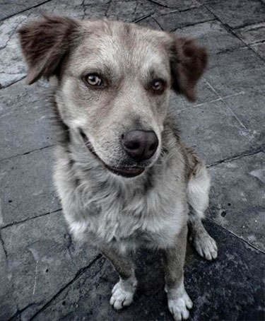
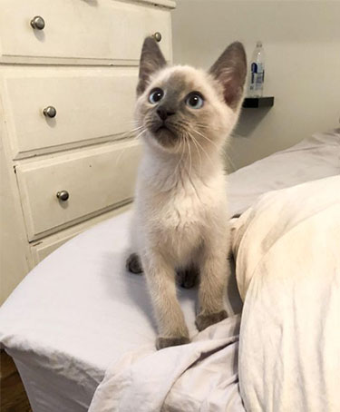
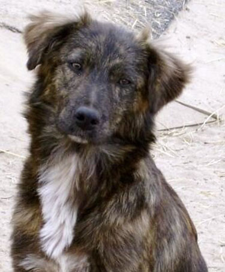

INICIO
SERVICIOS
Red de Adopciones
Sitters
COLABORÁ
Donaciones
Voluntariado
NOSOTROS
CONTACTO
REGISTRATE
PROYECTO ADOPTAR
Registrate y SALVÁ vidas
ADOPTADOS DE LA SEMANA



Bandido
Anastasia
Cachirulo
No Compres, ADOPTÁ.
Sumate a nuestra RED de adopciones
ENCONTRÁ A TU COMPAÑERO DE AVENTURAS
Adopción Gatos
Adopción Perros
Vos también podés COLABORAR
Participá como voluntario y ayudanos a ayudar
CONOCÉ LAS ACTIVIDADES DE NUESTROS VOLUNTARIOS